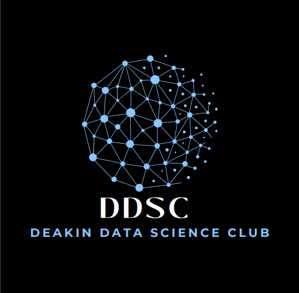

Past Events
March
- Show & Tell 1: Dev Setup - March 17
- Show & Tell 2: Practical Assignments & Problem-Solving - March 24
Upcoming Events
April
- Employability Essentials - April 3
- Mastering Probability for Data Science - April 4
- Craft Your Cover Letter - April 10
- Statistics for Data Science - April 11
- Job Site Search - April 17
- Matrices and their Applications - April 18
Proposed Events for 2025
- Deakin Alumni Talk
- Intro to Algorithms & Data Structures
- Kaggle Competitions
- Python and R for Data Science